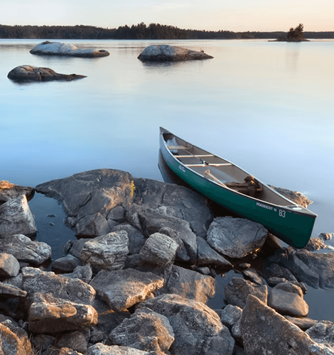
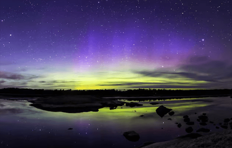
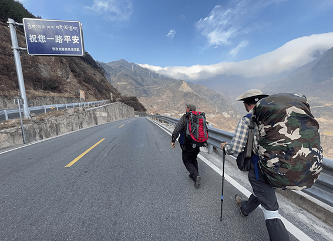
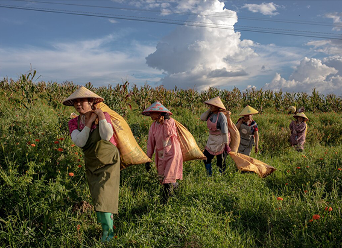
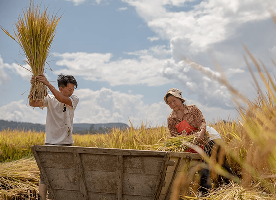

NATIONAL GEOGRAPHIC
This ancient city of sultans is a 21st-century wonder
TRAVEL
- 
- 

Returning to the Alhambra is like rereading a book. The hilltop citadel built by the Nasrid sultans above Granada, in Spain’s autonomous Andalusia region, was a masterpiece of medieval engineering, but also of literature poetry and philosophy expressed in dream-like architecture. Verses, blessings, and ruminations were etched into its facades so the structure would seem to speak.
“The perpetual bliss, the continual ecstasy…” runs one long strand around the reflecting pool of the Comares Palace. “Be sparing with your words, and you’ll go in peace” advises the inner wall above the sultan’s throne. Above, a domed roof composed of more than 8,000 pieces of wood and inlaid with a constellation of stars represents all seven heavens of Islamic cosmology.
The grand, medieval Alhambra palace, a UNESCO World Heritage Site, sets the tone in this historic city awash with traditions—one of Nat Geo’s Best of the World destinations. But while one foot is in the past, the other is tapping out a modern beat. Besides its history of flamenco singing and dancing, Granada is a European hub for the reigning hip-hop subgenre of trap music. It’s a university town, forever replenished by students, a place where ultra-traditional tapas bars share bustling streets with contemporary fusion restaurants.
History comes alive
Founded in the 11th century, Granada was a flourishing Moorish stronghold until it fell to Ferdinand II and Isabella I’s Catholic rule in 1492. In the ensuing years, Muslims and Jews were forced into the Albaicín, a neighborhood north of the Alhambra.
In modern times, the medieval Muslim quarter has preserved its sideways maze of whitewashed houses, spilling down the hillside on zigzagging narrow lanes. Indeed, there’s an edge-of-the-world appeal to the cafes and tapas bars that hang over the switchbacks and stairways that offer breathtaking views of the Alhambra.
It’s still possible to feel the passage of centuries through atavistic portals like El Bañuelo, the bunker-like remains of an 11th-century hammam bathhouse. Later Catholic monarchs saw to the destruction of many similar spas, equating them with sin. Thankfully this one survived and lives on as a small museum.
The king and queen who reconquered Spain and sent Christopher Columbus to the New World are buried together in the Royal Chapel of the Cathedral of Santa María de la Encarnación. Here, one of many Catholic sanctuaries that sprouted up during the couple’s reign, a gloomy mood of gothic romance prevails around their sculpted tombs.
Walking around the historic core, visitors find other famous figures, including Federico García Lorca. Born in Granada and executed with one of the first shots fired in the Spanish Civil War, the poet is still mourned like a favorite son around this city. Guided tours of his family’s summer house, Huerta de San Vicente, take visitors through his life and work. The park outside formerly an orchard is a fine place to read a few of his lines.
Tapas and more
Spain’s small-plate dining culture began in this region, and Granada’s hostelries can be absurdly generous in observing the local custom of free tapas with every alcoholic drink. The shortest glass of beer may come with a pork loin sandwich the size of your face. Hitting a few bars around Realejo or Plaza Nueva will leave you as stuffed and stunned as repeat trips to a wedding buffet.
In the glut of tapas bars, La Trastienda keeps a low profile, tucked behind the counter of a butcher shop. In 1836, the owner started feeding cold cuts to hungry customers in the queue. Today’s fare is still premium-grade cured meats and smoked cheeses.
Comments :
- john Very good
- john Very good
Leave a Reply
Your email address will not be published. Required fields are marked*
Related posts:
-
Walking in the footsteps of China’s historic caravans of tea porters
Meet Chen Shou Kang: friendly, bald, energetic even in his 80s, the unofficial historian of the village of Wayao Guan, located in the lumpy mountains of western China. Chen is remembering the last beifu he ever saw
View article -
Walking the Earth for 9 years plays tricks on your mind
Call it your very first step on a 24,000-mile walk across the world. You take this inaugural stride in Ethiopia, in the Great Rift Valley of Africa, the paradise of thorns where humankind was born.
View article -
In this part of China, hands not machines define the rhythm of life
Watch them till the soil. How often have they done this chore? A thousand times? Ten thousand? More? Yet they are incapable of consistency. Over the course of their working life, they will never swing a hoe the same way twice
View article